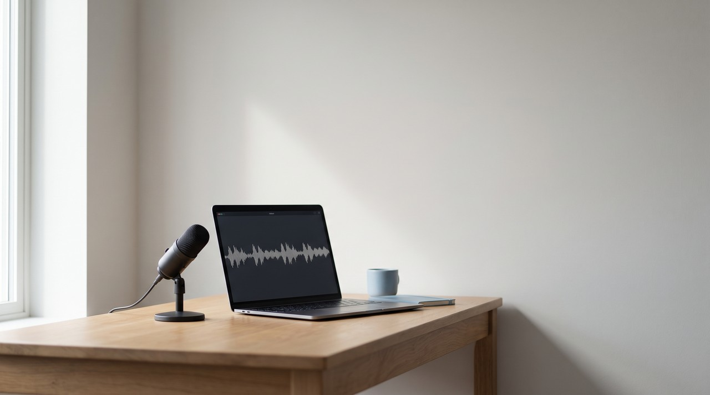

Chatterbox TTS: the free voice cloner from Resemble AI, its hidden watermark, and how it compares to GPT-SoVITS

Chatterbox is a free open source text to speech model from Resemble AI under the MIT licence. It copies a voice from a short reference clip without any training, and one setting makes the speech more or less dramatic. Every file it makes gets Resemble's Perth watermark, a hidden signal you cannot hear. It runs best on an NVIDIA graphics card, and setting it up on Windows requires some Python work.
| Chatterbox (Resemble AI) | GPT-SoVITS | VoiceClone | |
|---|---|---|---|
| What it is | Open source text to speech model | Open source text to speech project | Windows app that runs GPT-SoVITS |
| Licence | MIT | MIT | Free tier, then $49 once |
| Voice from | A short clip, no training | A 5 second clip, or 1 minute of audio to fine tune | 1 to 3 minutes of your voice, training optional |
| Languages | English, plus 23 in the Multilingual model | English, Japanese, Korean, Cantonese, Chinese | English |
| Emotion control | Exaggeration and cfg_weight settings | Follows the tone of the reference clip | Follows the tone of your recording |
| Setup on Windows | Python and pip, NVIDIA card advised | Integrated package, double click go-webui.bat | One file, START VoiceClone.bat |
By Inam, the person who makes VoiceClone, a Windows text to speech cloner, so please read the last column knowing I am not neutral about it. More of my engineering notes are on designesh.com. Last updated 12 October 2026.
I wrote a piece on the old Real-Time Voice Cloning project, and you might have seen that its own author now points people to Chatterbox. That makes people wonder what Chatterbox is and if it is really free. I want to explain what it does and help you decide if you should use it or find something else for your voiceovers.
Chatterbox is a good free voice cloner if you know some Python and have an NVIDIA graphics card, but you should know about its hidden watermark before you publish your files. The maker is Resemble AI, a company that also sells cloud voice cloning. They gave this specific model away under the MIT licence, so you are allowed to use it for commercial work.
What is Chatterbox TTS?
Chatterbox is actually a whole family of text to speech models from Resemble AI, and you can find it published on GitHub and on Hugging Face. Text to speech just means you type a sentence and the computer reads it out loud for you. Voice cloning is an extra step where the model reads your text in a specific voice copied from a recording you provide.
This model family has several members today. The original Chatterbox is an English model with about 500 million parameters, and parameters are just a rough measure of how heavy the model is. Chatterbox Turbo has 350 million parameters and is built to run fast, and Chatterbox Nano drops to 110 million so it can run on a normal processor. There is also Chatterbox Multilingual V3, which handles 23 languages including Hindi, Arabic, Spanish and Chinese. I checked the GitHub page on 12 October 2026, and it had about 26,900 stars.
How does Chatterbox clone a voice without training?
You might hear that Chatterbox works zero shot. That technical term simply means you do not train the program on the voice beforehand. You just give it one reference clip, and the code examples use a clip of about 10 seconds, and then it reads your text in that voice straight away.
This instant copy is fast and it is why people like the tool, but there is always a trade off. A short clip gives the software the basic pitch and sound of a voice, but it misses how that person actually talks. Small habits, pacing and an accent will only come through partly at best. The model card actually warns that a strong accent in the reference clip can bleed into another language, and it suggests setting cfg_weight to 0 to fix that issue.
What do the exaggeration and cfg_weight settings do?
These controls are what make Chatterbox different from most other free tools. The original model has a setting called exaggeration, which decides how dramatic or emotional the delivery is. It also has a setting called cfg_weight, which roughly controls how fast it paces the speech and how closely it follows your reference file. Both of these settings start at 0.5.
The README file gives plain advice on how to use these. You lower cfg_weight to about 0.3 for a fast speaker, and you use an exaggeration of about 0.7 or more with cfg_weight around 0.3 for dramatic speech. The guide also warns that higher exaggeration tends to speed up the audio, so you have to lower cfg_weight to slow it back down. If you want a calm voiceover, you should leave both numbers at 0.5 and only adjust them if your result sounds flat or rushed.
What is the Perth watermark in Chatterbox?
You need to know that every audio file Chatterbox makes includes Resemble AI's Perth watermark. A watermark is just a hidden signal mixed into the sound that human ears cannot hear, and Resemble says it survives MP3 compression and standard editing with nearly 100% detection accuracy. Someone can use a small piece of code later to check your file, and it will answer yes if it came from Chatterbox or no if it did not.
This watermark is fine for most people and even a good thing, because it makes bad behavior easier to trace back. But I think you should know it is there before you start. If you publish a voiceover made with Chatterbox, anyone with the detector program can tell it was generated by AI. That is an honest way to work, and if your business plan depends on nobody ever knowing the truth, your plan is the problem and the watermark is not.
Is Chatterbox better than ElevenLabs?
Resemble claims on its model card that Chatterbox was preferred over ElevenLabs in side by side tests. They link to a comparison run on a site called Podonos. That is the maker talking about their own product, so you should treat it as a claim and not as a final verdict. I have found that these blind tests depend heavily on the specific voices and sentences the testers chose to use.
The cost difference is true without any test. ElevenLabs is a paid cloud service, and Chatterbox runs entirely on your own machine for free once you manage to install it. The real catch is the installation process, and this is exactly where most people get stuck.
How hard is it to install Chatterbox on Windows?
The official way to get it is to type pip install chatterbox-tts in a Python environment. The authors say they built and tested it using Python 3.11 on Debian 11. That is Linux, so Windows is simply not the platform they test their code on. It can run on an NVIDIA card through CUDA, on Apple chips, or directly on your computer processor. The problem is that running the bigger models on the processor alone is very slow.
If you look at the issues page, you will see the usual Windows problems. People report that pip fails because of the PyTorch version, and they get CUDA errors, or they find that newer cards like the RTX 5070 Ti are not supported by the PyTorch build the package brings in. This is totally normal for open source AI projects, but it means you will likely spend an evening fixing software versions unless you already work in Python. You can find some community launchers that wrap everything in a simple start.bat file, which really helps, but Resemble does not make those.
Chatterbox or GPT-SoVITS: which one should you use?
Both tools are free, they both use the MIT licence, and they both clone from a short clip. The difference comes down to what each tool was built to do. Chatterbox is built to give you instant results from a short clip and it gives you emotion controls. GPT-SoVITS can also work from a 5 second clip, but its true strength is fine tuning. Fine tuning means you give the software about 1 minute of the voice and it trains on it, and the final result keeps much more of the real accent and rhythm.
This is how I suggest you choose between them. If you need many languages or quick emotional reads, you should try Chatterbox. If you want one voice, usually your own, to sound exactly like you for a long narration, you should fine tune GPT-SoVITS. GPT-SoVITS also provides an integrated package for Windows where you just double click a file called go-webui.bat. That is much easier than doing a pip install, but you will need to spend some time learning its training screens. I explain exactly how that engine works in my other piece called GPT-SoVITS in plain words.
Where does VoiceClone fit?
I actually built an early version of VoiceClone to run on Chatterbox before I moved my app over to GPT-SoVITS, so I have spent a lot of real time with both. VoiceClone is a Windows 10 and 11 app that I made. It runs GPT-SoVITS entirely offline, and you just double click START VoiceClone.bat to set it up without installing any Python yourself. You record 1 to 3 minutes of your voice, the app checks your recording, and then you press Make it perfect to start training right on your own PC. This process runs faster on an NVIDIA card, but it also works on your processor.
VoiceClone is English only, it does not sing, and it lacks the emotion slider you get in Chatterbox. My free tier lets you clone and fully train one voice and make 3 generations to test how it sounds. If you like it, the $49 one time license opens up unlimited length, the word editor, retraining and file exports without any monthly subscription. I ask that you only clone your own voice, or a voice where the owner has explicitly agreed to it. You can grab the software directly from my download page.
FAQ
Is Chatterbox TTS free for commercial use?
You can use it for commercial work for free. Resemble AI released Chatterbox under the MIT licence, and that licence allows commercial use. You just need to remember that every file carries the Perth watermark, so people with a detector program can tell the audio was generated by a computer.
Does Chatterbox need a GPU?
The software runs best on an NVIDIA graphics card through CUDA, but it will also run on Apple chips and on your normal computer processor. If you only use your processor, the full size models are quite slow. Resemble's smaller Nano model is the one designed to run on a processor.
How many languages does Chatterbox support?
The original Chatterbox model and Chatterbox Turbo are English only. The newer Chatterbox Multilingual V3 supports 23 languages. Those include Hindi, Arabic, Spanish, French, Japanese and Chinese.
Is Chatterbox better than GPT-SoVITS?
They are built for different jobs. Chatterbox clones a voice instantly from a very short clip and gives you sliders for emotion. GPT-SoVITS can be fine tuned on about 1 minute of audio from one voice, and this training process keeps much more of the original accent and rhythm. If you plan to use one voice again and again, fine tuned GPT-SoVITS is usually the closer match.
Sources: the Chatterbox README on GitHub and the Chatterbox model card on Hugging Face, both read on 12 October 2026, the Chatterbox issues page on GitHub, the GPT-SoVITS README on GitHub, and the VoiceClone product page on myvoiceclones.com.
Hear your own voice come back.
The free Windows app clones and fully trains one voice, yours, on your own PC. No account, no upload, and the download starts right away.